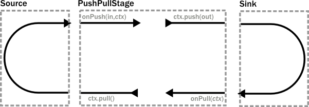
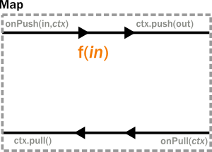
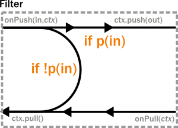

Akka Streams
Présentation au JHFC Lyon
whois
frédéric Masion
github : fmasion
f.masion@kreactive.com
Agenda
- C'est quoi un stream ?
- reactives-streams.org
- Akka streams
WTF streams ?
Wikipedia (en) dit :
sequence of data elements made available over time
"moi" je dit :
c'est une sequence d'informations
- qui arrivent dans le temps
- ordonnées (généralement)
- potentiellement infinie
WTF streams ?
En scala y en a plein :-(
- scala.collection.immutable.Stream
- org.scalaz.stream
- play.api.libs.iteratee
- reactive extention (scala.rx, rx-scala, RxJava...)
- org.apache.spark
- Plein de patterns/paradigmes pouvant les gérer
- Listener, Observer, Observable, Iteratee, Acteurs....
Les Streams sont partout
(Si on veut bien les voir)
- IOs en général (déscripteurs de fichiers, sockets...)
- Timers
- Evaluation récursive Lazy
- Actions utilisateurs (Boutons, Inputs...)
- ...
vous êtes familier avec les pipes unix
Deux (grands) types de fonctionnement
- Push
- Pull
Push
Pousse les informations aussi vite qu'elles arrivent
Push
- Idéal si Publisher plus lent que Subscriber
- Sinon risque d'OutOfMemory
- Autres stratégies
- Discard message
- NACK
- Persiter la queue
- ...
Pull
Demande un élément à la fois
Pull
- Pas de risque d'OutOfMemory
- Sous utilisation des ressources
- Efficace pour taitements couteux
La Solution :
Le dynamic push-pull
Dynamic Push - Pull
Demande un packet sur low watermark
Pousse les informations aussi vite qu'elles arrivent
(dans la limite du nombre de demandes)
Dynamic Push - Pull
- Presque aussi efficace que le push
- Gère le back pressure comme le pull
- Tunable par le buffer size
- Si n = 1 ?
- Si n = Long.MAX_VALUE ?
reactive-streams.org
Reactive Streams is an initiative to provide a standard for asynchronous stream processing with non-blocking back pressure on the JVM.
Spécification d'interopérabilité
Le back pressure n'a d'intéret QUE si réalisé sur toute la chaine
reactive-streams.org
Seulement 4 interfaces
- Publisher
- Subscriber
- Subscription
- Processor
reactive-streams.org
Et une MECHANTE EQUIPE
|
Björn Antonsson – Typesafe Inc. Gavin Bierman – Oracle Inc. Jon Brisbin – Pivotal Software Inc. George Campbell – Netflix, Inc Ben Christensen – Netflix, Inc Mathias Doenitz – spray.io Marius Eriksen – Twitter Inc. Tim Fox – Red Hat Inc. Viktor Klang – Typesafe Inc. |
Dr. Roland Kuhn – Typesafe Inc. Doug Lea – SUNY Oswego Stephane Maldini – Pivotal Software Inc. Norman Maurer – Red Hat Inc. Erik Meijer – Applied Duality Inc. Todd Montgomery – Kaazing Corp. Patrik Nordwall – Typesafe Inc. Johannes Rudolph – spray.io Endre Varga – Typesafe Inc. |
Akka, Reactor, Rxjava, RatPack, Vert.x...
reactive-streams.org
SPI pour les implémenteurs de bibliothèques
Pas pour les ends users
Akka Streams
Implémentations de la spécification reactive-streams en akka
Akka Streams level 1
Concepts de base :
- Source
- Sink
- Flow
- RunnableFlow
- Materializer
Back to code
object Exemple1 {
def main(args: Array[String]): Unit = {
implicit val system = ActorSystem("Sys")
import system.dispatcher
implicit val materializer = FlowMaterializer()
val range = (1 to 10)
//Scala Stream
val result: Int = range.toStream.filter(_ % 2 == 0).fold(0)(_+_)
println(result) // => 30
//Aka Streams
val fResult: Future[Int] = Source(range).filter(_ % 2 == 0).fold(0)(_+_)
fResult.onComplete{x =>
println(x) // => Success(30)
system.shutdown()
}
}
}
Décomposons :
val fResult: Future[Int] = Source(range).filter(_ % 2 == 0).fold(0)(_+_)
Equivaux à :
val source: Source[Int] = Source(range)
val sink: FoldSink[Int, Int] = Sink.fold[Int, Int](0)(_+_)
val flow = Flow[Int].filter(_ % 2 == 0)
val step1: Source[Int] = source via flow
val runnable: RunnableFlow = source via flow to sink
val matMap: MaterializedMap = runnable.run()
val fResult: Future[Int] = matMap.get(sink)
akka.stream.scaladsl
trait FlowOps[+Out] extends scala.AnyRef {
type Repr[+O] <: akka.stream.scaladsl.FlowOps[O]
def map[T](f : scala.Function1[Out, T]) : FlowOps.this.Repr[T] = { /* compiled code */ }
def mapConcat[T](f : scala.Function1[Out, scala.collection.immutable.Seq[T]]) : FlowOps.this.Repr[T] = { /* compiled code */ }
def mapAsync[T](f : scala.Function1[Out, scala.concurrent.Future[T]]) : FlowOps.this.Repr[T] = { /* compiled code */ }
def mapAsyncUnordered[T](f : scala.Function1[Out, scala.concurrent.Future[T]]) : FlowOps.this.Repr[T] = { /* compiled code */ }
def filter(p : scala.Function1[Out, scala.Boolean]) : FlowOps.this.Repr[Out] = { /* compiled code */ }
def collect[T](pf : scala.PartialFunction[Out, T]) : FlowOps.this.Repr[T] = { /* compiled code */ }
def grouped(n : scala.Int) : FlowOps.this.Repr[scala.collection.immutable.Seq[Out]] = { /* compiled code */ }
def scan[T](zero : T)(f : scala.Function2[T, Out, T]) : FlowOps.this.Repr[T] = { /* compiled code */ }
def groupedWithin(n : scala.Int, d : scala.concurrent.duration.FiniteDuration) : FlowOps.this.Repr[Out]#Repr[scala.collection.immutable.Seq[Out]] = { /* compiled code */ }
def drop(n : scala.Int) : FlowOps.this.Repr[Out] = { /* compiled code */ }
def dropWithin(d : scala.concurrent.duration.FiniteDuration) : FlowOps.this.Repr[Out]#Repr[Out] = { /* compiled code */ }
def take(n : scala.Int) : FlowOps.this.Repr[Out] = { /* compiled code */ }
def takeWithin(d : scala.concurrent.duration.FiniteDuration) : FlowOps.this.Repr[Out]#Repr[Out] = { /* compiled code */ }
def conflate[S](seed : scala.Function1[Out, S])(aggregate : scala.Function2[S, Out, S]) : FlowOps.this.Repr[S] = { /* compiled code */ }
def expand[S, U](seed : scala.Function1[Out, S])(extrapolate : scala.Function1[S, scala.Tuple2[U, S]]) : FlowOps.this.Repr[U] = { /* compiled code */ }
def buffer(size : scala.Int, overflowStrategy : akka.stream.OverflowStrategy) : FlowOps.this.Repr[Out] = { /* compiled code */ }
def transform[T](mkStage : scala.Function0[akka.stream.stage.Stage[Out, T]]) : FlowOps.this.Repr[T] = { /* compiled code */ }
def prefixAndTail[U >: Out](n : scala.Int) : FlowOps.this.Repr[scala.Tuple2[scala.collection.immutable.Seq[Out], akka.stream.scaladsl.Source[U]]] = { /* compiled code */ }
def groupBy[K, U >: Out](f : scala.Function1[Out, K]) : FlowOps.this.Repr[scala.Tuple2[K, akka.stream.scaladsl.Source[U]]] = { /* compiled code */ }
def splitWhen[U >: Out](p : scala.Function1[Out, scala.Boolean]) : FlowOps.this.Repr[akka.stream.scaladsl.Source[U]] = { /* compiled code */ }
def flatten[U](strategy : akka.stream.FlattenStrategy[Out, U]) : FlowOps.this.Repr[U] = { /* compiled code */ }
private[akka] def timerTransform[U](mkStage : scala.Function0[akka.stream.TimerTransformer[Out, U]]) : FlowOps.this.Repr[U] = { /* compiled code */ }
private[scaladsl] def withAttributes(attr : akka.stream.scaladsl.OperationAttributes) : FlowOps.this.Repr[Out]
private[scaladsl] def andThen[U](op : akka.stream.impl.Ast.AstNode) : FlowOps.this.Repr[U]
}
Conclusion level 1
- Contrairement à Stream, Source n'est pas une monade
- Source, Flow, Sink font parti d'un DSL
- Le DSL crée un AST (RunnableFlow)
- L'AST est Materialisé sous forme d'acteurs
- L'AST peut être matérialiser plusieurs fois
- l'AST pourrait être sérialisé
- Configurée par les MaterializationSettings
- Il est possible d'extraire la valeur finale de la Map de Matérialisation
Akka Streams level 2
from Flow to Stage
- Chaque opération
- map()
- filter()
- grouped()
- ...
- est implémenté en "Processing Stage"
- On met autant de Stage que nécéssaire entre Source et Sink
- Chaque Stage sera Matérialisé par un acteur
- mySource.transform(() => new MyCustomStage)
Le Stage et le backpressure
from Flow to Stage
Pour chaque message qui entre "un message revient"
Exemple simple : map()

class Map[A, B](f: A => B) extends PushPullStage[A, B] {
override def onPush(elem: A, ctx: Context[B]): Directive =
ctx.push(f(elem))
override def onPull(ctx: Context[B]): Directive =
ctx.pull()
}
cardinalité != 1 pour 1 : filter()

class Filter[A](p: A => Boolean) extends PushPullStage[A, A] {
override def onPush(elem: A, ctx: Context[A]): Directive =
if (p(elem)) ctx.push(elem)
else ctx.pull()
override def onPull(ctx: Context[A]): Directive =
ctx.pull()
}
Je vous laisse implémenter mapConcat() ?

Conclusion level 2
Ne jamais casser la boucle de retour ! sinon dead lock
- Le Stage de base à implémenter est le PushPullStage
- Le PushStage peut être utilisé pour les 1-1 et n-1
- StatefulStage permet d'avoir un état et l'accès à become()
- D'autres implémentations de base ne sont pas encore documentées
Akka Streams level 3
from Flow to Graph
Les Streams en 2DFlowGraph
val g = FlowGraph { implicit b =>
import FlowGraphImplicits._
val in = Source(1 to 10)
val out = Sink.ignore
val bcast = Broadcast[Int]
val merge = Merge[Int]
val f1, f2, f3, f4 = Flow[Int].map(_ + 10)
in ~> f1 ~> bcast ~> f2 ~> merge ~> f3 ~> out
bcast ~> f4 ~> merge
}

FlowGraph Fan out
- BroadCast => envoie le message à tous les routees
- Balance => envoie le message à 1 des routees
- UnZip => split les tuples sur 2 routees
- FlexiRoute Logique à implémenter soi même
FlowGraph Fan in
- Merge => prend aléatoirement sur chaque entrée
- MergePreferred => 1 entrée sinon les autres
- UnZip => split les tuples sur 2 routees
- ZipWith => 1 element de chaque entrée (barrière)
- Zip => inverse de UnZip
- Concat => 1er Stream puis le 2nd...
- FlexiMerge => implemente ta MergeStrategy
FlowGraph Quizz
val g = FlowGraph { implicit b =>
import FlowGraphImplicits._
val in = Source(1 to 1000000)
val out = Sink.ignore
val bcast = Broadcast[Int]
val concat = Concat[Int]
val f1, f2, f3, f4 = Flow[Int].map(_ + 10)
in ~> f1 ~> bcast ~> f2 ~> concat ~> f3 ~> out
bcast ~> f4 ~> concat
}
Conclusion Level 3 : FlowGraph
- Par défaut pas de cycles
- b.allowCycles()
- Attention aux deadLocks
- Tester avec un "gros" échantillion
Les Flows et FlowGraphs sont réutilisables
Ils peuvent être matérialisés plusieurs fois
Ils sont composables
Akka Streams level 4
Intégration
- Les points d'integration sont les Sources et les Sinks
- Avec reactives-streams
- Source => Publisher
- Sink => Subscriber
- Avec Akka
- Source => ActorProducer[T]
- Sink => ActorSubscriber
That's it
Akka Streams What's Next ? post 1.0
- D'autres Materialisers
- source.map(_+1).map(_*2)......map(_/Math.PI)
- Une collection de Flows réutilisables
Conclusion 1/2
Avantages
- Back Pressure
- Une API simple et élégantes
- Une API Typée sur les acteurs
- Akka Http => Pérénité
- Flows serialisables ET réutilisables
- Bientôt des collections de Flow, Source et Sink ?
- FileSink, S3Sink, EmailSink, PushNotificationSink..?
- UTF8_Flow, JsonFlow..?
- API FlowGraph surpuissante !
- TickSource et Zip
Conclusion 2/2
Inconvénients
- API jeunes 1.0M2
- Donne une "fausse" impréssion de simplicité
- Risques de DeadLock !
- Peut devenir TRES complexe
- Locks difficile à tester
- Pas de tolérence pour les pertes de messages
- Pas de clustering sans gestion du risque
- Beaucoup d'indirection entre code et execution
- Gestion des erreurs ?
- StackTrace
- Locks silencieux